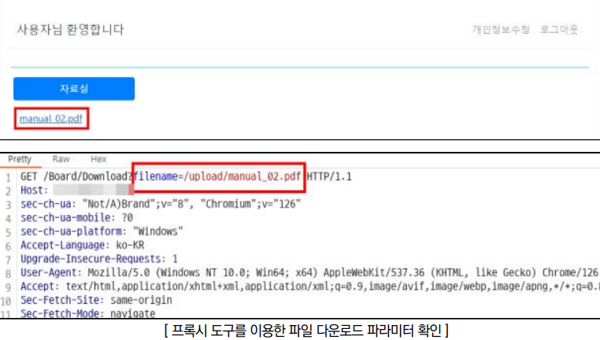
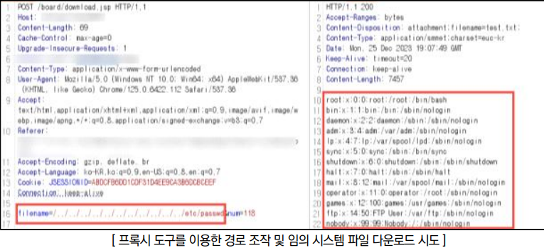
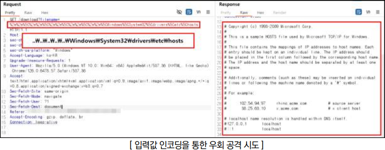
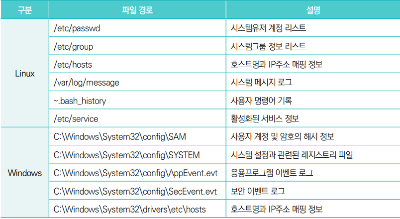
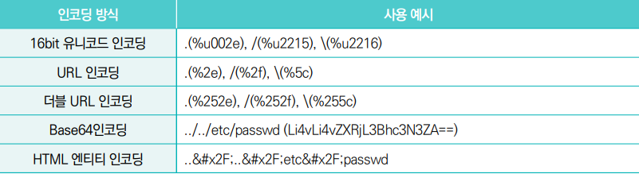

점검 목적
- 웹 사이트에서 허용된 경로 외 다른 경로의 파일 접근 및 다운로드 가능 여부 점검
- 허용된 경로 외 다른 경로의 비인가된 접근을 방지하여, 공격자가 임의의 경로에 존재하는 파일을 열람하거나 다운로드하는 것을 차단하기 위함
참고
- 애플리케이션의 파라미터 값을 조작하여 웹 사이트의 중요한 파일(DB 커넥션 파일, 애플리케이션 파일 등) 또는 웹 애플리케이션 서버 루트에 있는 중요한 설정 파일(/etc/passwd, /etc/shadow 등)을 다운로드할 수 있음
- CGI, JSP, PHP 등 파일 다운로드 기능을 제공하는 애플리케이션에서 입력 경로를 검증하지 않는 경우, 공격자는 임의의 문자(../.. 등)나 주요 파일명을 입력하여 웹 애플리케이션 서버의 홈 디렉터리를 벗어나 임의의 위치에 있는 파일을 열람하거나 다운로드할 수 있음
판단 기준
양호 : 입력값이 검증되어 허용된 경로와 파일만 접근 가능하고, 경로 조작 및 임의 시스템 파일 다운로드가 불가능하며, 다운로드 디렉터리 외의 접근과 상위 디렉터리 접근이 차단된 경우
취약 : 입력값이 검증없이 처리되어 임의의 경로로 접근이 가능하거나 비인가된 파일을 다운로드할 수 있는 경우
조치 방법
- 다운로드 시 허용된 경로 이외의 디렉터리와 파일에 접근할 수 없도록 구현하고, 서버 사이드에서 ../..와 같은 경로 이동 관련 문자열에 대해 입력값 검증을 수행하여 비인가된 접근을 차단함
점검 방법
Step 1) 웹 사이트 내 파일 다운로드 기능 식별 후 파일 다운로드 요청 및 응답 패킷 내 URL 파라미터, POST 데이터, 쿠키 등을 통해 파일 이름 및 경로 노출 여부 확인(또는 웹 사이트 내 이미지 렌더링 시 이미지 파일의 경로를 참조하는 경우)

Step 2) 파일 다운로드 시 요청 패킷 내 파일 경로를 상대 경로(../../ 또는 ..\..\)로 변조하여 요청할 경우 정상적으로 해당 경로 내 파일 다운로드 여부 확인

Step 3) "Step 2"에서 파일 다운로드가 불가능한 경우 변조한 파일 경로를 아래의 인코딩(또는 치환, 종단 문자 추가)을 적용하여 우회 가능 여부 확인


우회 방안
인코딩 적용 : 필터링 시스템이 특정 문자열 패턴을 차단하는 경우 문자열을 인코딩하여 우회 시도

* 특수문자 중첩 사용 : 필터링 시스템이 단일 패턴(../)을 감지하여 소거할 경우, 중복된 경로 문자를 사용하여 우회( ....// → ../ )
* 종단 문자 추가 : 필터링 시스템이 특정 확장자만 허용할 때 Nullbyte, 개행 문자 등을 사용하여 우회([파일명]%00.jpg , [파일명]%0a.jpg 등)
* 문자열 패턴 검증 우회 : 시스템 파일 관련 단어(etc, passwd 등)들을 필터링할 때 대소문자 변환(EtC, PaSswD 등), URL인코딩과 조합(e%74c%2Fpa%73%73wd) 등의 방법을 사용하여 우회
조치 방법
1. 파일 다운로드의 취약점은 주로 파일 이름 조작으로 인해 발생되므로 파일의 이름을 데이터베이스에 저장하고 다운로드 수행 시 요청 파일 이름과 비교하여 적절한지 확인하여 사용자가 조작할 수 있는 공격 포인트를 제거
2. 파일 다운로드가 가능한 디렉터리를 별도의 파티션에서 관리하거나 특정 디렉터리로 한정하여 다른 디렉터리에서는 파일을 다운받을 수 없도록 설정
3. URL을 통해 파일 경로를 직접 노출시키지 않고, 파일 ID나 토큰을 사용하여 파일 경로를 은닉
4. 공격자가 입력값 변조를 통한 경로 추적이 불가하도록 파일 확장자 등의 일부 패턴을 화이트리스트로 적용하여 검증하고, 경로 추적 관련 특수문자(. / \ % 등) 필터링 로직 구현